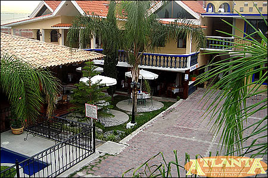

Izucar De Matamoros
De la voz náhuatl Itzcoac, -lugar de obsidiana- -lugar donde se labra la obsidiana-.
Asentamiento humano que data desde la expansion de los olmecas del Golfo, lo constata la basilica antropomorfa que se exhibe en el museo de antropología e hitorico en México, cuya antigüedad data de 1300 años a.C.
Desde si llegada, entre un paisaje espectacular de cañaverales, prodria sentir el clima clido de la region invitando a visitar alguno de sus balnearios del lugar.
Principales Atractivos
Sus inglesias y ex coventos representan su principal atractivo, destacando el Ex convento Dominico con su importante pila bautismal de cantera. También encontrara edificios de notable arquitectura civil que data de los siglos XVI al XVIII.
Refrescantes balnearios en la región invitan al visitante a disfrutar un agradable fin de semana.
Su mercado tipico te ofrece el tradicional mole poblano, el pozole estilo Matamoros, tlaxcales, pan barrieco, enjocado (pollo con jocoque y chile guajillo), pipián verde hecho con pepita de calabaza y tlanilpa, tamales de frijol, pozole, podemos citar también los alimentos derivados del maíz.
También podrá degustar dulces típicos como alegrías, palanquetas, jamoncillo de pepita, conservas de mango, dulce de calabaza, cacahuate garapiñado, pepita garapiñada y obleas de pepitas de calabaza con caramelo.
Artesanías y productos regionales
Destaca en su cerámica sus coloridos árboles de la vida como artesanía principal, reconocida ampliamente, además de loza de barro, cera escamada y cerámica policromada.
Ex Convento de Santo Domingo
Joya Colonial del S.XVI
La construcción del convento se inició en 1552, finalizando en su totalidad en 1612, dichas obras se deben al notable constructor dominico, Fray Juan de la Cruz.
El Altar Mayor, El Sagrario y los retablos, fueron trabajados notablemente en madera de cedro tallados y estofados a mano, con un estilo churrigueresco, por lo que en algún tiempo este convento fue considerado, en segundo mas bello de la República en conventos de este tipo cubiertos con hoja de oro de 24 kilates.
Una de tantas joyas con las que cuenta es la famosa pila bautismal, tallada en piedra de cantera en una sola pieza, la cual causa admiración de propios y extraños por sus dimensiones y belleza.
Se calcula un diámetro de más de 2 m.
En el púlpito de mampostería que se encuentra del lado derecho del Altar Mayor, el 17 de diciembre de 1810, después de oficiar una misa, los curas, Don José Ma. Morelos y Pavón y Don Mariano Antonio Matamoros Guridi, arengaron a la gente para luchar por nuestra Independencia.
Con fecha 28 de diciembre de 1939, el fuego casi destruyó el templo y algunas partes del convento. Gracias al dinamismo del Sr. Cura don Arturo Márquez Aguilar (q.e.p.d.) y a la colaboración de todo el pueblo izucarense, a la Santa Cofradía del Santísimo y a las asociaciones religiosas, se restauró el templo, aunque en yesería conservando el estilo que tenía antes del siniestro.
Fiesta Ppatronal
Santo Domingo de Guzmán es el patrón de los 14 barrios que componen a Izúcar, celebrándose su fiesta el 8 de agosto, en la cual asiste el Patrón de cada barrio, así como el de algunas poblaciones vecinas.
Cada imagen viene en procesión desde su barrio para celebrar junto con los de más santos visitantes la histórica procesión en el atrio de la iglesia de Santo Domingo.
|
|
Mercado típico
En el mercado encontrará varias fondas donde se elaboran los guisos típicos de la región, como el mole de olla, la barbacoa de cerdo y el guaxmole.
|
|
Balnearios


La cálida región alberga algunos balnearios, destacando el de San Carlos popularmente conocido por sus aguas termales curativas. Cuenta con amplias instalaciones, servicio de alimentos y hospedaje para disfrutar un agradable fin de semana.
Hospedaje
Izucar cuenta con los mejores hoteles, donde te brindan un hospedaje de lo mejor!
-Estos son los siguientes hoteles:
-Hotel Atlanta
-Hotel Matamoros
-Hotel Atoyac
|
 |
 |
|
|